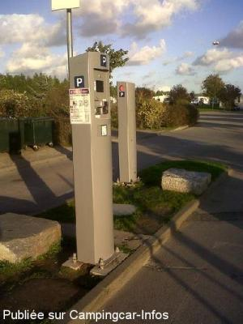
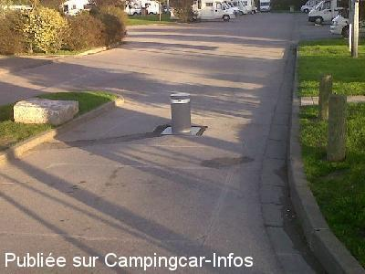
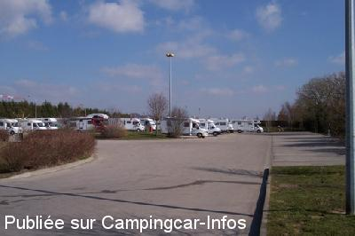
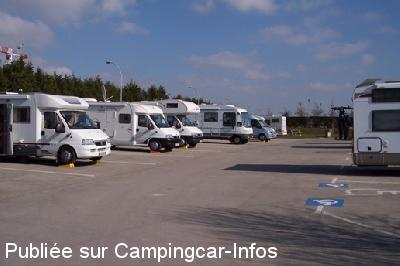
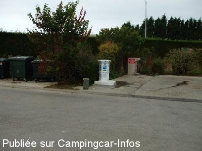

ASN = Aire de services avec stationnement nuit possible de :
LE TRÉPORT
(N° 772)
Accès/adresse :
Rue Pierre Mendès France
Parc Sainte Croix
76470 LE TRÉPORT
Parc Sainte Croix
76470 LE TRÉPORT
Latitude : (Nord) 50.05954° Décimaux ou 50° 3′ 34′′
Longitude : (Est) 1.3893° Décimaux ou 1° 23′ 21′′
Tarif : 2015
Stationnement, services, électricité : 9,50 €
Type de borne : AIRESERVICES
Services :


Tables de pique-nique
Passage du boulanger l'été
Autres informations :
61 emplacements
Tél Office de Tourisme : +33(0)235 860 569
http://www.ville-le-treport.fr/pratique_municipale-51.html

Le 06/12/2010 par paulus18

Le 06/12/2010 par paulus18

Le 04/08/2010 par Plexat

Le 04/08/2010 par Plexat

Le 28/09/2009 par Louisette
de
sanglier08
le 28/11/2015 :
tres belle aire proche des commerces et centre ville
tres belle aire proche des commerces et centre ville
de
guy lefevre
le 11/11/2015 :
Aire trés bien située à 10minutes du port et de la mer
Aire trés bien située à 10minutes du port et de la mer
de
Christian
le 21/09/2015 :
Nous, nous y somme rendu ce weekend- end, je vous conseil de contrôler si il y a encore de la place avant prendre votre ticket, moi je me suis fait avoir, La borne hydraulique n'est plus en fonction donc même si l'air est complet comme ce weekend rien ne vous l'indique et j'ai perdu 9,5€ mais la ville se les est bien mis en poche. J'ai du prendre une place au camping d'accoter ou ils sont super sympa et accueillent
Nous, nous y somme rendu ce weekend- end, je vous conseil de contrôler si il y a encore de la place avant prendre votre ticket, moi je me suis fait avoir, La borne hydraulique n'est plus en fonction donc même si l'air est complet comme ce weekend rien ne vous l'indique et j'ai perdu 9,5€ mais la ville se les est bien mis en poche. J'ai du prendre une place au camping d'accoter ou ils sont super sympa et accueillent
de
annick et bernard
le 13/08/2015 :
avons séjourné 2 nuits aire calme proche du centre ville .merci à la ville de nous accueillir dans de bonnes conditions.
avons séjourné 2 nuits aire calme proche du centre ville .merci à la ville de nous accueillir dans de bonnes conditions.
de
J P Bedouet
le 24/06/2015 :
Aire bien agencée, agréable malgré parfois les odeurs de l'usine voisine. Toutes les prises électriques fonctionnaient semble-t-il, nous n'avons eu aucun souci.
Aire bien agencée, agréable malgré parfois les odeurs de l'usine voisine. Toutes les prises électriques fonctionnaient semble-t-il, nous n'avons eu aucun souci.
de
jean-marc le belge
le 02/12/2014 :
Suite au dysfonctionnement de plus en plus fréquent la borne a été supprimée m'a t' on dit de source sure résultat on en revient au système précédent ou tout le monde se gare n'importe ou et si vous avez la chance d'avoir un emplacement régulier vous n'êtes pas sur de pouvoir vous branchez a une borne électrique d'autant plus que certaine borne ne fonctionne pas ,dommage le système de borne était bien .vous pouvez également vous garer a l'autre parking sur la falaise pour 5 euros sans electricité
Suite au dysfonctionnement de plus en plus fréquent la borne a été supprimée m'a t' on dit de source sure résultat on en revient au système précédent ou tout le monde se gare n'importe ou et si vous avez la chance d'avoir un emplacement régulier vous n'êtes pas sur de pouvoir vous branchez a une borne électrique d'autant plus que certaine borne ne fonctionne pas ,dommage le système de borne était bien .vous pouvez également vous garer a l'autre parking sur la falaise pour 5 euros sans electricité
de
Tiramisu
le 30/09/2014 :
Nous venons de passer une nuit sur cette aire le 27 septembre 2014.
Petit conseil aux futurs visiteurs : attention vu que les bornes ne semblent plus fonctionner, faites le tour de l'aire avec votre CC AVANT de prendre votre ticket et de payer votre emplacement.
Nous avons pris notre ticket avant d'entrer et une fois la carte bleue débitée des 9,5 € avons constaté que l'aire était complète...
Heureusement qu'après quelques minutes nous avons pu bénéficier du départ d'un autre CC.
Aire bien située, à quelques minutes à pieds du port et des restaurants.
Propre et bien équipée, prix raisonnable et fixe quel que soit la saison !
En cas d'affluence ne pas hésiter à visiter le camping juste à côté qui propose un vaste espace pour CC pour à peine plus cher et qui dispose d'un restaurant et d"un dépôt de pain et viennoiseries pour le petit déjeuner !
Nous venons de passer une nuit sur cette aire le 27 septembre 2014.
Petit conseil aux futurs visiteurs : attention vu que les bornes ne semblent plus fonctionner, faites le tour de l'aire avec votre CC AVANT de prendre votre ticket et de payer votre emplacement.
Nous avons pris notre ticket avant d'entrer et une fois la carte bleue débitée des 9,5 € avons constaté que l'aire était complète...
Heureusement qu'après quelques minutes nous avons pu bénéficier du départ d'un autre CC.
Aire bien située, à quelques minutes à pieds du port et des restaurants.
Propre et bien équipée, prix raisonnable et fixe quel que soit la saison !
En cas d'affluence ne pas hésiter à visiter le camping juste à côté qui propose un vaste espace pour CC pour à peine plus cher et qui dispose d'un restaurant et d"un dépôt de pain et viennoiseries pour le petit déjeuner !
de
pascal 57
le 20/09/2014 :
Nous sommes passés au mois d'août, très belle aire bravo à la commune, en plus une superette à proximité
Nous sommes passés au mois d'août, très belle aire bravo à la commune, en plus une superette à proximité
de
Frédérique
le 28/07/2014 :
Nous étions sur cette aire le 28 juin 2014 , très propre et calme.
Beaucoup de monde mais l aire est suffisamment grande !
Nous étions sur cette aire le 28 juin 2014 , très propre et calme.
Beaucoup de monde mais l aire est suffisamment grande !
de
Grincheux73
le 29/04/2014 :
Du passage le 20 avril 2014. Rien a redire. Aire très propre. 9€50, rapport qualité prix, Eau et électricité, Impeccable. 10' à pied du centre ville et avec une poussette... Arrivée le matin car les place sont chère...
Du passage le 20 avril 2014. Rien a redire. Aire très propre. 9€50, rapport qualité prix, Eau et électricité, Impeccable. 10' à pied du centre ville et avec une poussette... Arrivée le matin car les place sont chère...
de
Breeze campers
le 20/02/2014 :
§ Price now €9.50 - many electric connections -some old but still working. Picnic tables around site. Very clean and well maintained.
§ Price now €9.50 - many electric connections -some old but still working. Picnic tables around site. Very clean and well maintained.
de
Brancard62
le 09/01/2014 :
Les plots sont hors service,prendre tickets aux bornes par CB ou un moneyeur, contole par la police municipale.Aire toujours prisée plus que compléte pour les fetes de fin d'année
Les plots sont hors service,prendre tickets aux bornes par CB ou un moneyeur, contole par la police municipale.Aire toujours prisée plus que compléte pour les fetes de fin d'année
de
marteaux
le 24/08/2013 :
de passage en aout le17 et le 18 le calme .mais nous avons une personne super dominique qui rend service a tous
de passage en aout le17 et le 18 le calme .mais nous avons une personne super dominique qui rend service a tous
de
BRUCE
le 29/06/2013 :
prenez le temps de lire et d'attendre les informations sur la borne apres tout devient plus facile
ATTENTION ne laisser pas votre tiket en vue car des petits malins font le tour pour recuperer votre code appuie sur sortie temporaire et rentre avec le camping car
prenez le temps de lire et d'attendre les informations sur la borne apres tout devient plus facile
ATTENTION ne laisser pas votre tiket en vue car des petits malins font le tour pour recuperer votre code appuie sur sortie temporaire et rentre avec le camping car